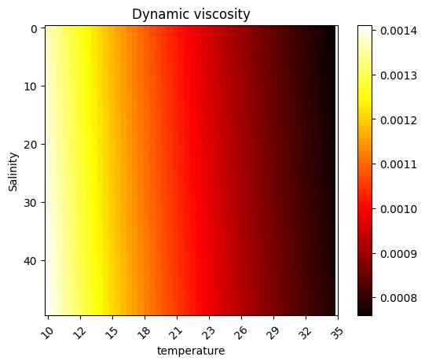

dynamic_viscosity(38e-3, np.linspace(10, 35, 5))array([0.00140539, 0.00118849, 0.00102094, 0.0008885 , 0.0007818 ])This module contains low level functions related to naval architecture and hydrodynamics. Many of them are called by other functions within the library.
load_water_properties ()
*loads a 2D lookup table of water dynamic viscosity
Returns: pd.DataFrame: dataframe of water properties*
calc_salinity (measured_density:float, measured_temperature:float)
*calculate water salinity from density and temperature using UNESCO 1983 (EOS 80) polynomial
Args: measured_density (float): measured water density measured_temperature (float): measured water temperature
Returns: float: water salinity*
| Type | Details | |
|---|---|---|
| measured_density | float | measured water density [kg/m3] |
| measured_temperature | float | measured water temperature [degC] |
| Returns | float |
Although a typical value of 1.18e-3 [kg/(ms)] is often used for dynamic viscosity, calculating the value at the current moment in time can still be advantageous. In such cases, the dynamic viscosity of seawater can be found using the equations of Sharkawy et al 2010. This equation is used in the TEOS-10 standard and is implemented here.
\[\mu_{SW} = \mu_W (1 + AS +BS^2)\]
\[\mu_W = 4.2844e^{-5} + \frac{1}{0.157(T + 64.993)^2 - 91.296} \]
\[A = 1.541 + 1.998e^{-2} T - 9.52e^{-5}T^2 \] \[B = 7.974 - 7.561e^{-2}T + 4.724e^{-4}T^2 \]
For the above equations, \(T\) is temperature in degrees Celsius, and \(S\) is the salinity in \(\frac{g}{kg}\). The Sharkawy correlation is valid for the following conditions
This method has an average accuracy of \(\pm\) 4%. For alternative methods on calcualting the dynamic viscosity of seawater see Qasem et al 2021.
dynamic_viscosity (salinity:float, temperature:float)
Calculate the dynamic viscosity dependent on temperature and salinity
| Type | Details | |
|---|---|---|
| salinity | float | A positive value of the water salinity [g/kg] |
| temperature | float | The temperature in celsius [C] |
| Returns | float | returns values in [kg/ms] |
Applying the function to a range of temperatures shows that the viscosity is quite temperature dependent
array([0.00140539, 0.00118849, 0.00102094, 0.0008885 , 0.0007818 ])Looking at a range of both temperature and salinity combinations, the viscosity appears to be more dependent on temperature than salinity in the range of possible values we find in the sea
array([25., 26., 27., 28., 29., 30., 31., 32., 33., 34., 35., 36., 37.,
38., 39., 40.])counts = 50
comb_array = np.array(np.meshgrid(np.linspace(25, 40, counts )*10**(-3), np.linspace(10, 35, counts))).T.reshape(-1, 2)
comb_array
res = dynamic_viscosity(comb_array[:,0], comb_array[:,1]).reshape(counts,counts)
plt.imshow(res, cmap = 'hot')
plt.colorbar()
plt.title("Dynamic viscosity")
plt.ylabel('Salinity')
plt.xticks(np.linspace(0, 50, 10 ) ,np.linspace(25, 40, 10).astype(int), rotation= 45)
plt.xticks(np.linspace(0, 50, 10 ) ,np.linspace(10, 35, 10).astype(int), rotation= 45)
plt.xlabel('temperature')Text(0.5, 0, 'temperature')
\[v = \frac{\mu_{SW}}{\rho},\]
where \(\mu_{SW}\) is the dynamic viscosity of seawater, and \(\rho\) is the density of the water
kinematic_viscosity_fn (dynamic_viscosity:float=0.00118, water_density:float=1026)
A simple wrapper calculating the ratio of dynamic viscosity and water density
| Type | Default | Details | |
|---|---|---|---|
| dynamic_viscosity | float | 0.00118 | This value is typically 1.18e-3 [kg/(ms)] |
| water_density | float | 1026 | The density of water under current conditions [kg/m^3] |
| Returns | float | [m^2/s] |
The kinematic viscosity can be calculated without entering any parameters, this uses the default values only
However if the water conditions are not those of the default these alternative values can be entered as required
The reynolds number is a common formalua used throughout physiscs and engineering desciplines. Low reynolds numbers typically indicate laminar flow whilst high reynolds numbers typically indicate turbulent flow. However, in the case of ships the Reynolds number will always be large, however it is still a valuable component of many other calculations used by marine architects.
\[\text{Re} = \frac{V_s L_{os}}{v}, \] where \(V_s\) is the speed through wataer, \(L_{os}\) is the length overall submerged of the ship, and \(v\) is the kinematic viscosity.
reynolds_number_fn (stw:float, length:float, kinematic_viscosity:float)
The Reynolds number is a element of fluid dynamics and is often used to predict whether flow is laminar or turbulent
| Type | Details | |
|---|---|---|
| stw | float | Speed through water [m/s] |
| length | float | Length of the vessel, \(L_{os}\) Length overall submerged is typically used [m] |
| kinematic_viscosity | float | [m^2/s] |
| Returns | float | Reynolds number is dimensionless |
As can be seen due to the small values of kinematic viscosity even a small ship going relatively slowly (approx 10kn) has a large reynolds number
The ratio of flow inertia to an external field. The Froude number is often used in estimating the resistance of a partially submerged object in water
\[\text{Fr} = \frac{V_s}{\sqrt(g L_{WL})}, \] where \(V_S\) is the speed through water, \(L_{WL}\) is the length at waterline, and \(g\) is acceleration due to gravity.
froude_number_fn (stw:float, length:float, gravity:float=9.81)
The Froude number is useful for calculating the water resistance
| Type | Default | Details | |
|---|---|---|---|
| stw | float | speed through water [m/s] | |
| length | float | Length of vessel, typically \(L_{wl}\) Length of waterline [m] | |
| gravity | float | 9.81 | acceleration due to gravity [m/s^2] |
| Returns | float | The Froude number is a dimensionless value |
As the Froude number is inversevly proportional to the size of the vessel, froude numbers tend to be small for ships which also tend to go at slower speeds. Relative to the Reynolds number the Froude number is always much smaller.
The resistance coefficient related to the resistance of the water flowing over the hull
\[ C_F = \frac{c_1}{(log_{10}Re - 2)^2} + c_2,\]
Where \(Re\) is the Reynolds number and \(c_1\) and \(c_2\) are constant adjustment values. ITTC-1957 (Hadler 1958) use the model-ship correlation line
\[ C_F = \frac{0.075}{(log_{10}Re - 2)^2} ,\]
Which is the default setting in pyseatrials
CF_fn (reynolds_number:float, c1:float=0.075, c2:float=0)
An essential part of calculating the resistance experienced by the ship
| Type | Default | Details | |
|---|---|---|---|
| reynolds_number | float | indicating the type of flow of the water | |
| c1 | float | 0.075 | An adjustment value dault from ITTC-1957 |
| c2 | float | 0 | An adjustment value the default is 0 |
| Returns | float | This is a dimensionaless value |
The \(19^{th}\) ITTC proposed a formula that corrects for the roughness of the vessel hull.
\[\Delta C_F = \frac{11}{250} \left( \left(\frac{k_s}{L_{WL}}\right)^{\frac{1}{3}} -10 \cdot \text{Re}^{-\frac{1}{3}} \right) + \frac{1}{8000} , \]
where \(k_s\) is the surface roughness, \(L_{WL}\) is the length of vessel at waterline, and \(Re\) is the Reynolds number for current conditions.
This value is used in several other adjustments and calculations. Function for obtaining it is found here.
Other names for this variable are Roughness allowence
roughness_resistance_fn (length:float, reynolds_number:float, surface_roughness:float=0.00015)
The function CF_fn calculates a dimensionless value representing the resistance experienced by a ship based on the given parameters.
| Type | Default | Details | |
|---|---|---|---|
| length | float | Length of the vessel at waterline [m] | |
| reynolds_number | float | dimensionless value describing flow properties | |
| surface_roughness | float | 0.00015 | The default value is outdated an modern hull covering are likely considerably less rough [m] |
| Returns | float | The dimensionless friction factor representing surface roughness of the hull |
The form factor (1+k) is a dimensionless value used to modify the friction coefficient to the hull form of the vessel. The below expression uses the Gross & Watanabe method (Form factor, appendix 4, report of performance committee 13th ITTC. Hamburg (1972) ([no doi or digital reference available])
\[1 + k = 1.017 + 20 C_B \left( \frac{B}{L_{pp}} \right)^2 \sqrt{\frac{T_M}{B}}\]
where \(C_B\) is block coefficient, \(B\) is the beam of the ship, \(L_{pp}\) is the length between perpendiculars and \(T_M\) is the draught at midship
calculate_form_factor (C_B:float, B:float, L_pp:float, T_M:float)
The function calculate_form_factor calculates the dimensionless form factor (1+k) for a ship using the Gross & Watanabe method.
| Type | Details | |
|---|---|---|
| C_B | float | The block coefficient |
| B | float | Beam of the vessel [m] |
| L_pp | float | The length between perpendiculars [m] |
| T_M | float | The draught at midship [m] |
| Returns | float | The dimensionless form factor for the ship |
The viscous resistance coefficient is a dimensionless value that is used to describe the kind of frictional forces a vessel will encounter when moving through water.
\[C_v' = 1.06 C_F (1+k) + \Delta C_F\]
where \(C_F\) is the frictional corellation coefficient, \((1+k)\) is the form factor, and \(\Delta C_F\) is the roughness resistance coefficient
calculate_viscous_resistance_coef (C_F:float, form_factor:float, delta_C_F:float)
The function calculate_viscous_resistance_coef calculates the dimensionless viscous resistance coefficient for a vessel based on the given parameters.
| Type | Details | |
|---|---|---|
| C_F | float | The frictional correlation coefficient |
| form_factor | float | The form factor (1+k) |
| delta_C_F | float | The roughness resistance coefficient |
| Returns | float | The coefficient of viscous friction |
As an example
viscous_resistance_coef = calculate_viscous_resistance_coef(0.005, 1.189, 0.002)
print(viscous_resistance_coef)0.0083017Using the above example we can find the total frictional resistance due to the viscosity using \(R_V = \frac{1}{2}C_v' \rho V_S^2 S\)
The total resistance coeficient is the value describing the sum of all resistances experienced by the ship as it moves through the water. The coefficient can be found using the following equation
\(C_t'\ = \frac{2 R_T}{\rho V_S^2 S},\)
Where \(R_T\) is the total resistance experienced by the ship, \(\rho\) is the density of the water, \(V\) is the speed through water, and \(S\) is the wetted surface area of the ship. As can be seen the equation is very similar to the to the equation of viscous friction.
calculate_total_resistance_coef (total_resistance:float, stw:float, wsa:float, water_density:float=1026)
The function calculate_total_resistance_coef calculates the dimensionless coefficient of total resistance for a ship based on the given parameters.
| Type | Default | Details | |
|---|---|---|---|
| total_resistance | float | The total resistive force experienced by the ship [N] | |
| stw | float | The speed through water of the ship [m/s] | |
| wsa | float | The wetted surface area of the ship [m^2] | |
| water_density | float | 1026 | The desnity of seawater [kg/m^3] |
| Returns | float | The dimensionless coefficient of total resistance of the ship |
total_resistance = 10e6
stw = 12
wsa = 3e4
water_density = 1020
calculate_total_resistance_coef(total_resistance, stw, wsa, water_density)Running cells with 'pyseatrials (Python 3.11.2)' requires the ipykernel package. Run the following command to install 'ipykernel' into the Python environment. Command: '/home/jonno/venv/pyseatrials/bin/python -m pip install ipykernel -U --force-reinstall'
test_eq(calculate_total_resistance_coef(0, stw, wsa, water_density),0)
test_eq(calculate_total_resistance_coef(0.5 * water_density * wsa * stw**2, stw, wsa, water_density),1)
test_eq(calculate_total_resistance_coef(1, 4, 1, 1),2*(1/4)**2)Running cells with 'pyseatrials (Python 3.11.2)' requires the ipykernel package. Run the following command to install 'ipykernel' into the Python environment. Command: '/home/jonno/venv/pyseatrials/bin/python -m pip install ipykernel -U --force-reinstall'
The wetted surface area of a ship is useful for calculating the total surface friction. There are many ways of calculating the wetted surface area, however one of the most popular is the Holtrop-Mennen formula developed from analysing several hundred model tests Holtrop-Mennen. The expression is shown below
\[ \textrm{WSA} = L(2T+B)\sqrt{C_M}(0.453 + 0.4425C_B - 0.2862C_M - 0.003467\frac{B}{T} + 0.3696 C_{WP}) + 2.38 \frac{A_{BT}}{C_B} \]
where \(T\) is the draft, B is the beam, \(C_M\) is the midship section coefficient, \(C_B\) is the block coefficient, \(C_{WP}\) is the waterplance area coefficient, and \(A_{BT}\) is the transverse sectional area of the bulb. This equation produces good results for a wide range of ships; however, there may be deviations in ships with unusual hull forms, such as multi-hulled vessels or those with asymmetrical designs.
wetted_surface_area (draft:float, beam:float, length:float, midship_section_coeff:float, block_coeff:float, waterplane_area_coeff:float, transverse_sectional_area:float)
The function wetted_surface_area calculates the wetted surface area of a ship using the Hotropp-Mennen formula.
| Type | Details | |
|---|---|---|
| draft | float | The draft of the ship [m] |
| beam | float | The beam of the ship [m] |
| length | float | The length of the ship [m] |
| midship_section_coeff | float | The midship section coefficient [none] |
| block_coeff | float | The block coefficient [none] |
| waterplane_area_coeff | float | The waterplane area coefficient [none] |
| transverse_sectional_area | float | The transverse sectional area of the bulb [m^2] |
| Returns | float | The wetted surface area of the ship [m^2] |
draft = 10.5 # meters
beam = 16.2 # meters
length = 200 # meters
midship_section_coeff = 0.8
block_coeff = 0.7
waterplane_area_coeff = 0.9
transverse_sectional_area = 50 # square meters
wetted_area = wetted_surface_area(draft, beam, length, midship_section_coeff, block_coeff, waterplane_area_coeff, transverse_sectional_area)
print(f"The wetted surface area of the ship is: {round(wetted_area)} square meters")Running cells with 'pyseatrials (Python 3.11.2)' requires the ipykernel package. Run the following command to install 'ipykernel' into the Python environment. Command: '/home/jonno/venv/pyseatrials/bin/python -m pip install ipykernel -U --force-reinstall'
Calcuate the air density based on the the function “FUNCTION ESW(T)” in https://icoads.noaa.gov/software/other/profs
air_density (P:float, T:float, RH:float)
*Calculate air density based on https://icoads.noaa.gov/software/other/profs
Args: P (float): Air pressure in mbar T (float): Air temperature in degC RH (float): Air relative humidity*
| Type | Details | |
|---|---|---|
| P | float | air pressure in mbar |
| T | float | air temperature in degC |
| RH | float | air relative humidity as % |
air_density(P=1015, #air pressure in mbar
T=20, #air temperature in degC
RH=50 #air relative humidity as %
)Running cells with 'pyseatrials (Python 3.11.2)' requires the ipykernel package. Run the following command to install 'ipykernel' into the Python environment. Command: '/home/jonno/venv/pyseatrials/bin/python -m pip install ipykernel -U --force-reinstall'